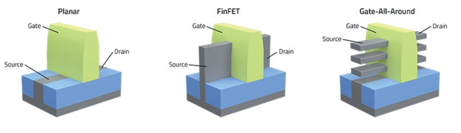

Study notes
Toward semiconductor process integration
Study notes on how process conditions shape transistor behavior, circuit performance, and yield. The focus is on connecting evidence across process steps and turning a suspected cause into a testable hypothesis. The examples draw on coursework, independent study, and experience in battery electrode manufacturing.
Three transistor structures
Moving from planar MOSFETs to FinFETs and gate-all-around structures improves gate control over the channel. It also makes geometry and process control more demanding. Those fabrication choices matter to the electrical behavior of the finished device.
Swipe to view the full diagram →

Planar MOSFET
The gate sits above a flat channel and controls current between the source and drain. As the channel gets shorter, maintaining that control becomes harder, and short-channel effects can increase leakage.
TSMC nodes28 nm and earlier
FinFET
The channel forms a thin vertical fin, with the gate wrapping around three sides. This gives the gate better control over the channel. Fin width and height become important dimensions to control during fabrication.
TSMC nodes16 nm, N7, N5, N3
Gate-all-around
The gate surrounds the channel, which can take the form of stacked nanosheets or nanowires. This improves channel control while adding fabrication challenges, including forming alternating layers and selectively removing sacrificial material.
TSMC nodesN2 (nanosheet, volume production since 4Q25), N2P, A16
TSMC node labels follow TSMC’s logic technology pages as reviewed in October 2026: N7, N5 and N3 are listed as FinFET, and N2 and A16 as nanosheet. A13 and A12 are also described as nanosheet.
Underneath all three is CMOS. CMOS logic uses complementary n-channel and p-channel devices. In an ideal static CMOS state there is no direct DC path from VDD to ground through both networks at once; real devices still have leakage.
Fabrication flow at a glance
A chip is built through repeated cycles of deposition or oxidation, lithography, etch, implantation, anneal, cleaning, and planarization. The sequence depends on the device and integration scheme. Process integration requires understanding how each step affects the next and checking the impact on the finished device.
Swipe to view the full diagram →
When Vth shifts
Threshold voltage (Vth) is an extracted device parameter associated with the onset of strong channel conduction. Its value depends on the device and extraction method. When Vth shifts, start by identifying the affected lots, wafers, devices, or chambers. Compare electrical results with inline measurements and process history, then use the pattern to guide the next check.
Swipe to view the full diagram →
From process to system
A change in one process step can affect the steps that follow. Dimensions, materials, interfaces, and doping influence threshold voltage, drive current, leakage, and capacitance. Those device characteristics can affect circuit delay, power, and timing margin. The digital hardware projects in this portfolio provide context for those downstream effects on circuit and system behavior.
Swipe to view the full diagram →
Bringing manufacturing experience to process integration
Battery electrode manufacturing experience provides a starting point: follow a problem across process steps, test a defined change, and check the downstream result. The examples below describe how those methods could support semiconductor process integration.
A new product or a transfer
Internship work included supporting change qualification across multiple production lots with a sampling plan and downstream review. A product transfer calls for a similar approach: define what needs to match between the source and receiving lines, then use comparable process and electrical data to evaluate the result.
Planning an experiment
The laser DOE started from a known baseline, with defined factors, measurable responses, and checks across operating conditions. The same discipline applies to controlled splits or a DOE with a process module: account for relevant interactions, then verify the result and downstream trade-offs.
Working across teams
Daily internship reports kept Process, Equipment, Production, and Quality aligned on the evidence, investigation status, and next action. That reporting discipline would support coordination with device and process-module teams. Manufacturing experience also includes nights and weekends in support of continuous production.
Initial learning priorities
Build familiarity with how electrical test, inline metrology, and reliability data connect to specific process steps. Reviewing real cases with experienced engineers would help develop the judgment needed to evaluate a suspected cause and qualify a change.